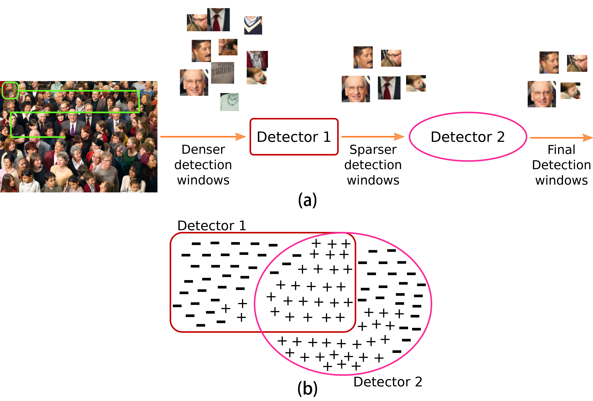
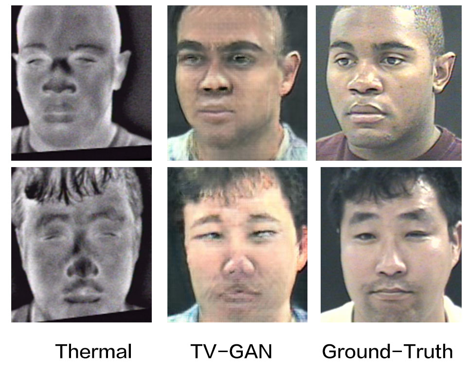
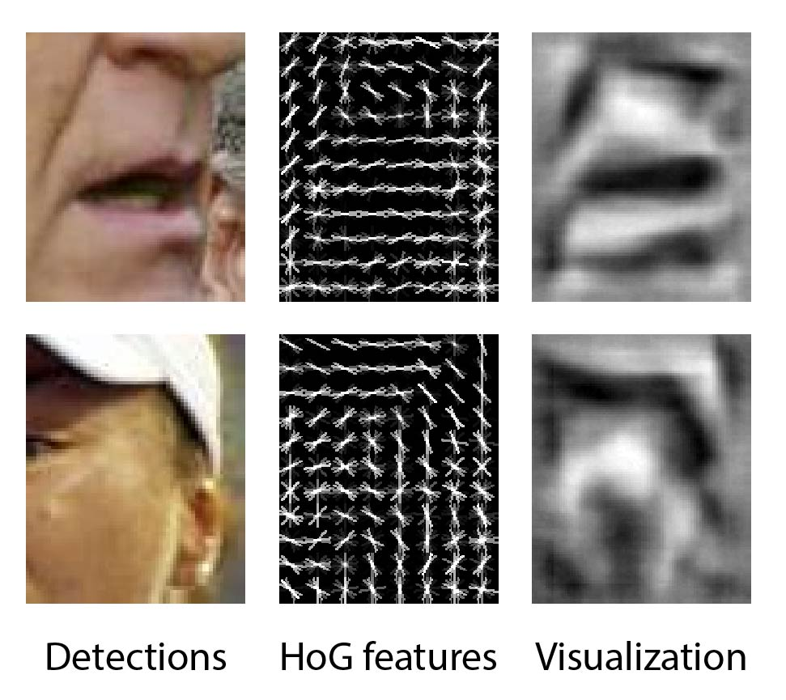
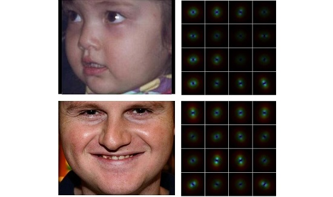

Selected Publications

Using LIP to Gloss Over Faces in Single-Stage Face Detection Networks
Adversarial Attack Face Detection Object Detection
Siqi Yang, Arnold Wiliem, Shaokang Chen, Brian C. Lovell
European Conference on Computer Vision (ECCV) 2018



